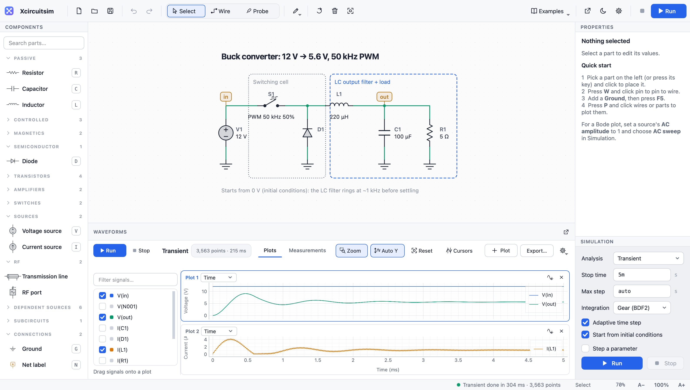
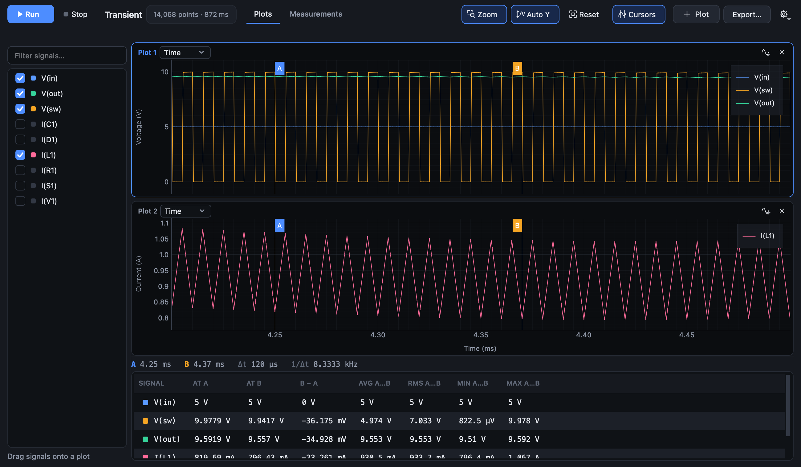
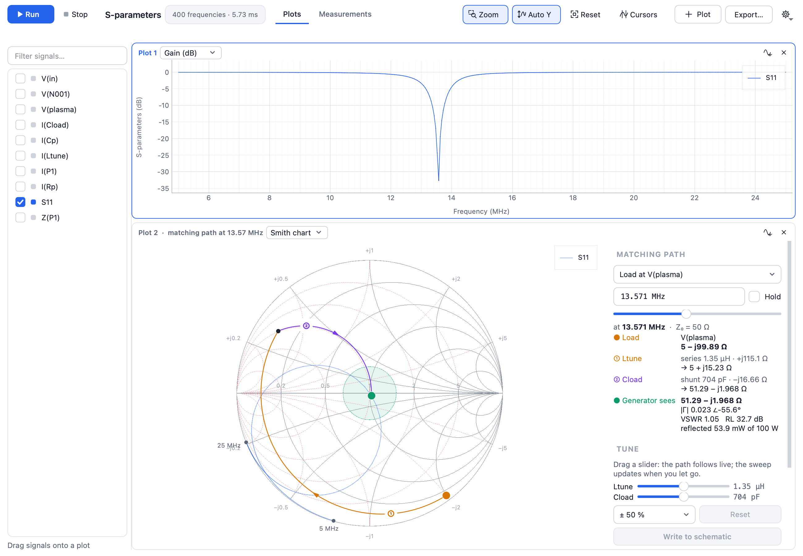
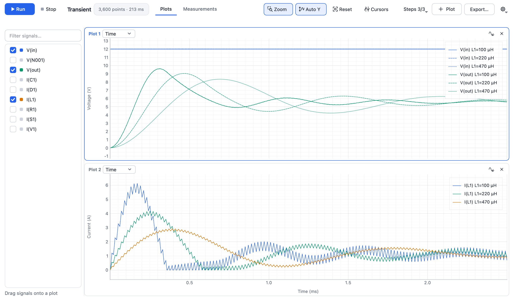
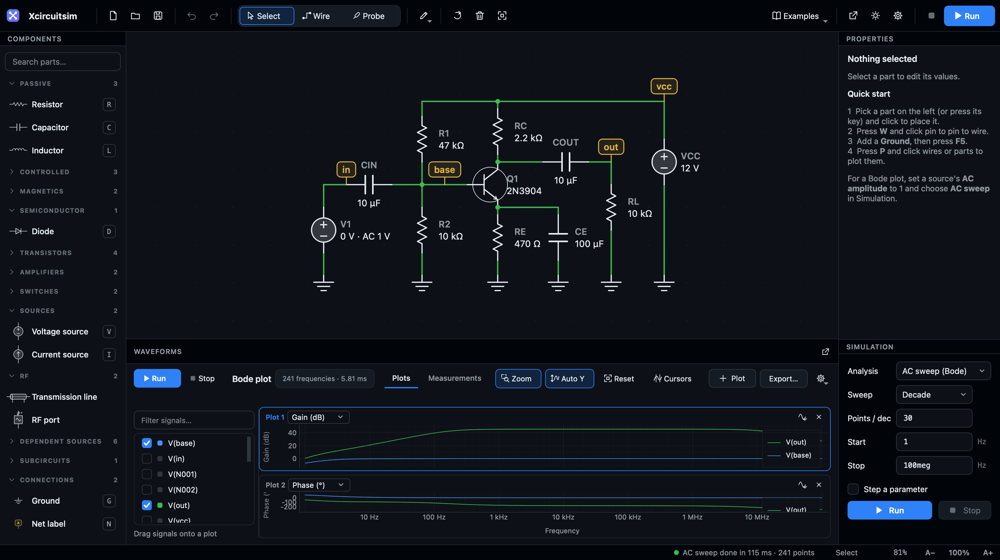
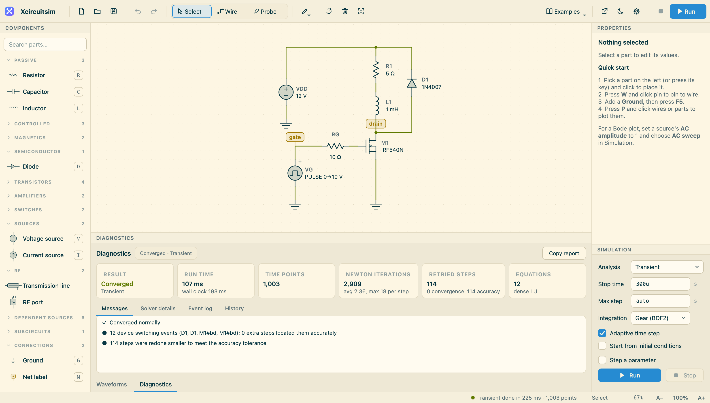

Draw it once.
Understand it fully.
Xcircuitsim is a circuit simulator for the Mac: power electronics, analog and RF. Sketch a schematic, press F5, and read every waveform — all the way to a Smith chart that shows your matching network at work.

From the first wire to the last measurement
Every view is built for reading circuits, not for decoration.





What's inside
A complete simulator, with nothing to configure before the first run.
A schematic editor that stays out of the way
Keyboard shortcuts for every part, drop a part onto a wire to insert it, drag wire ends to reshape them, copy and paste between files, undo everything.
A fast, careful solver
Adaptive Gear integration with error control, located switching events, sparse matrices for large circuits, and parameter steps spread over every CPU core.
Every analysis you reach for
Transient, AC sweeps with Bode plots, operating points, FFT and THD, two cursors, and measurements of average, RMS, ripple, frequency, rise time and power.
RF, properly
Lossless and lossy transmission lines with coax presets, RF ports, S-parameters, and a Smith chart with impedance and admittance grids and live tuning.
Real parts and SPICE models
Diodes, MOSFETs, BJTs, op-amps, transformers, saturating magnetics and behavioural sources — plus vendor .lib subcircuits and SPICE netlists.
Comfortable for long sessions
Light, dark and five more themes, an interface zoom, waveforms in their own window, and everything — layout, settings, the open schematic — remembered.
For RF and plasma engineers
See the match, not just the number
Matching a 13.56 MHz generator to a plasma is a walk across the Smith chart. Xcircuitsim draws that walk from the load to the generator, one arc per part, and lets you tune each part while you watch. Try it here.
- Series parts move along resistance circles, shunt parts along conductance circles, cables rotate.
- The panel beside the chart lists each step, the impedance after it, VSWR, return loss and reflected power.
- Drag a tuning slider: the path follows live, then Write to schematic keeps the values.
Load: 5 Ω plasma with a 117 pF sheath. Shaded: VSWR below 1.5. The faint curve is S11 from 5 to 25 MHz.
Quick, even when the circuit is not
Twenty-two circuits to start from
Open one from the Examples menu, press F5, and change whatever you like.
Basics
Power electronics
Rectifiers & magnetics
Analog
RF & transmission lines
Models & libraries
Join the beta
Xcircuitsim is in a free beta for the Mac. Tell me a little about what you'd like to simulate and I'll send you an invitation.
- Request access. Email with your Mac model and macOS version — the button opens a ready-made message.
- Install. Open the disk image and drag Xcircuitsim into Applications.
- First launch. The beta is not yet notarised by Apple: open it once, then choose System Settings → Privacy & Security → Open Anyway. After that it opens normally.
- Tell me what broke. Diagnostics → Copy report puts everything I need on the clipboard.
Requirements
- Mac
- Apple silicon (M1 or later)
- System
- macOS 14 Sonoma or later
- Download
- About 53 MB · everything included, nothing else to install
- Windows
- Planned after the Mac beta
Made by
Amit Singh
I'm a plasma physics researcher working on plasma processing for semiconductor manufacturing — which is why RF generators, matching networks and cables are first-class citizens in Xcircuitsim, next to the power-electronics and analog circuits every simulator should handle well.
Questions, ideas or collaboration: amit00971x@gmail.com
Privacy
Xcircuitsim does not collect any data.
It runs entirely on your Mac: no account, no analytics, no tracking and no network connection. Your schematics and settings stay on your Mac.
Support
Questions, problems or ideas? Email amit00971x@gmail.com.
macOS says Xcircuitsim can't be opened.
The beta isn't notarised by Apple yet. Open it once, click Done, then go to System Settings → Privacy & Security and click Open Anyway. On macOS 14 you can also Control-click the app and choose Open.
Which Macs does it run on?
Apple-silicon Macs (M1 and later) with macOS 14 Sonoma or newer. An Intel build and a Windows version are planned.
Can I open my LTspice files?
SPICE netlists (.cir, .net, .sp) run directly with File → Run SPICE Netlist, and vendor model libraries load into a Subcircuit part. LTspice schematics (.asc) aren't read yet.
A simulation failed or looks wrong.
Click the run status in the bottom bar to open Diagnostics: it explains what the solver ran into and suggests a fix. Copy report and email it with the schematic (.xcsim) and I'll look into it.
Is my work kept when I quit?
Yes: the open schematic, even unsaved, comes back the next time you start Xcircuitsim, along with your layout and settings. Save to a file (⌘S) to keep it for good.